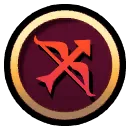
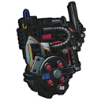
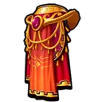

Warden
Fighter
Wardens are one with the untamed lands beyond the reach of civilization.
Stats
Attack (100)
1,160
Defense (100)
1,170
Health (100)
900
Hypermax: the strongest build
#28 of 42 classes in the Hypermax ranking
Leaderboard power
654,249
Profile power
523,399
Attack
21,056
Defense
169,261
Health
14,559
Critical
24%
Crit damage
×2
Element
180

Particle Thrower T15
Rune: Tornado Element · Spirit: Krampus Spirit
BIT.Runner Armor T15
Rune: Tornado Element · Spirit: Krampus Spirit
Cursed King's Might T15
Rune: Oblivion Element · Spirit: Krampus Spirit
Teddy Bear Head T15
Rune: Tornado Element · Spirit: Krampus Spirit
Kappa Cup T16
Rune: Tornado Element · Spirit: Krampus Spirit

Sia's Royal Mantle T15
Rune: Tornado Element · Spirit: Krampus Spirit
Skills: Forest Spirit T4, Bulletproof T4, Titan Skin T4, Elder Titan T4, Premium Brand T4
Computed only from game data: Legendary quality, Starforged, Ascension and Transcendence, level 50.